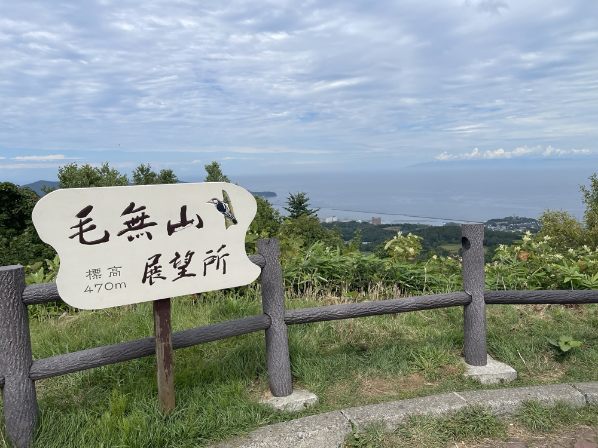
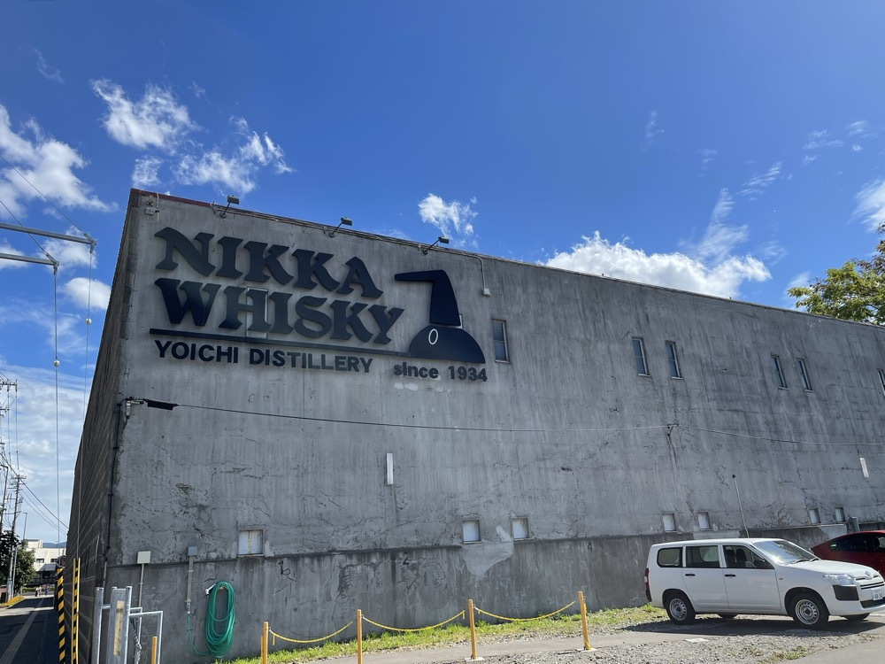
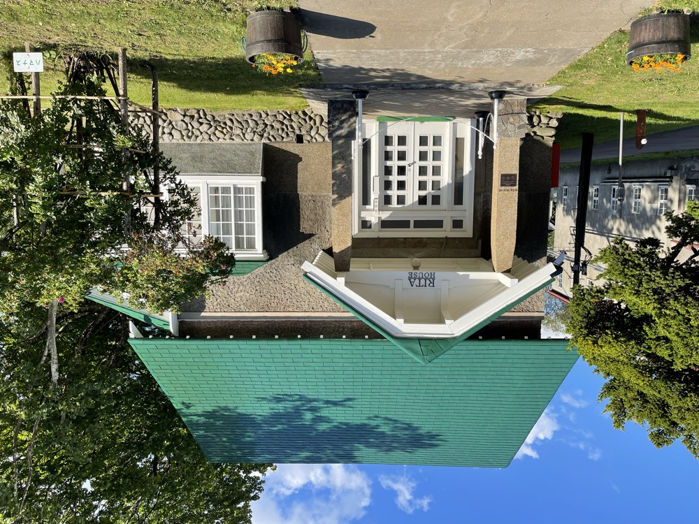
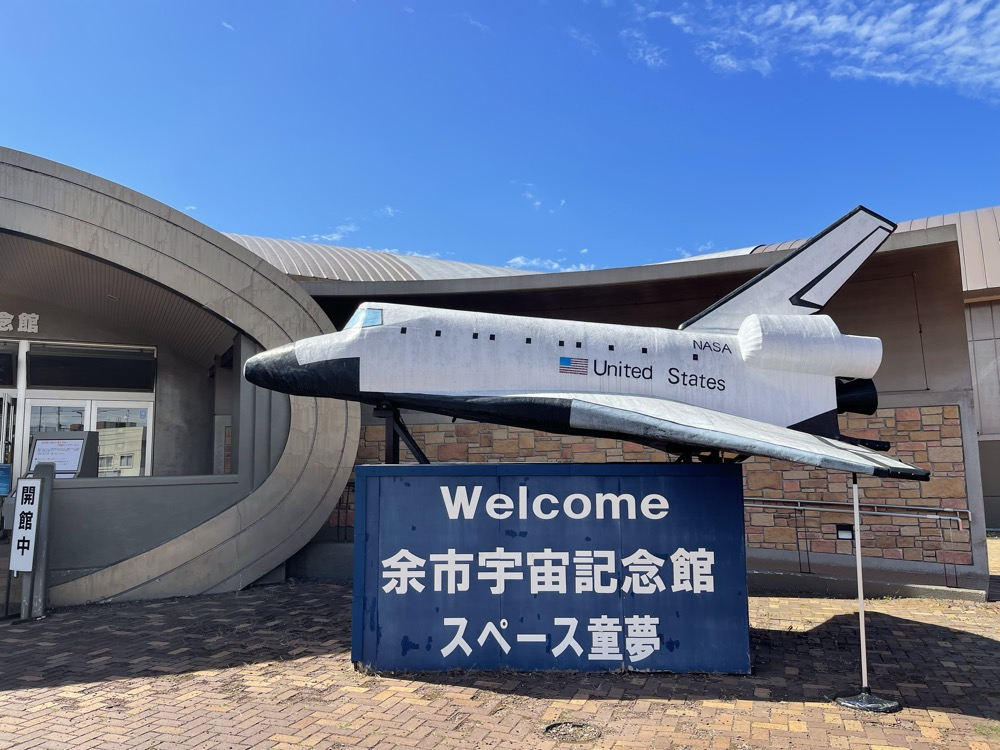
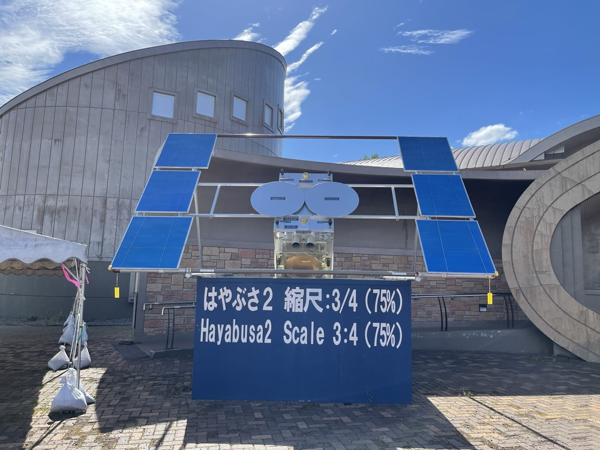
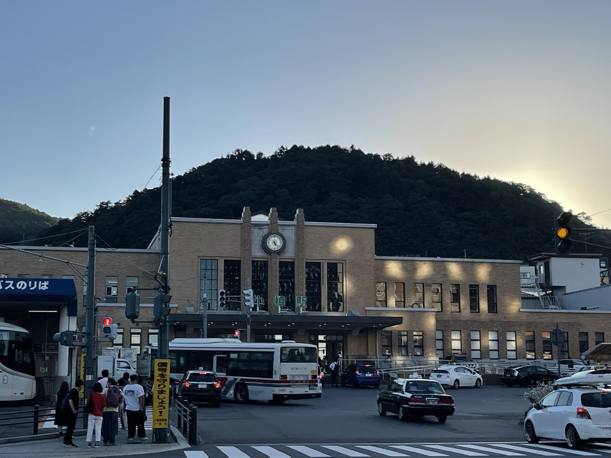
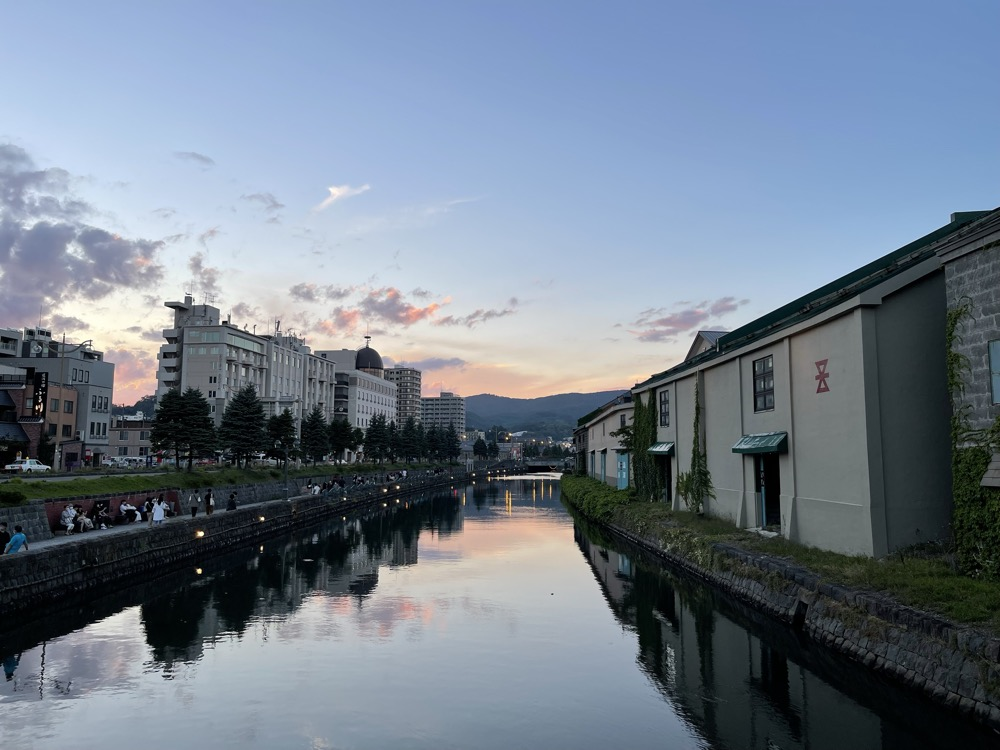
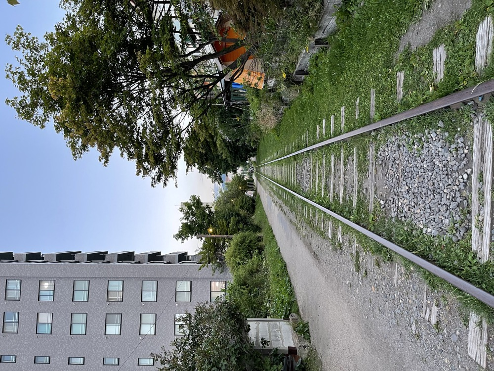
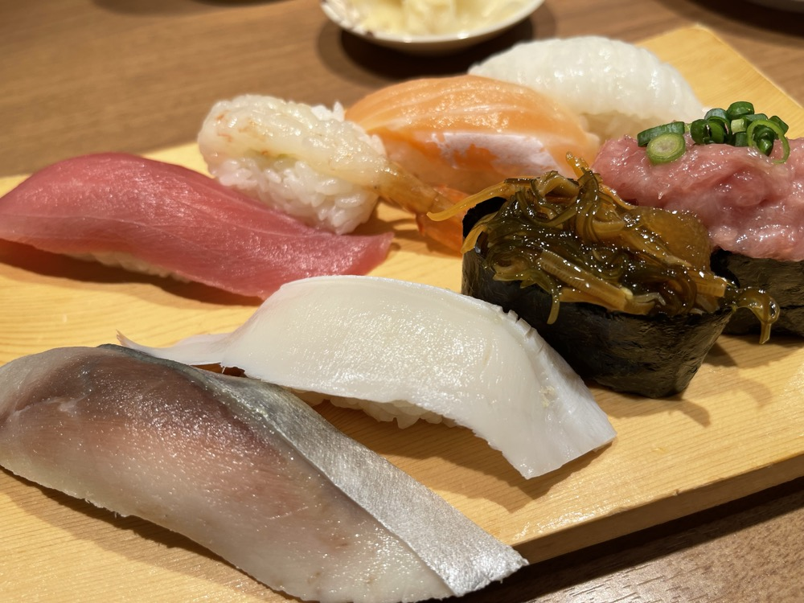

2日目は函館を朝出発して、北海道の南西部を一気に北上する。羊蹄山、毛無山展望所、ニッカウヰスキー余市蒸溜所、そして小樽までの一日。レンタカーのハンドルを握って、いよいよ車旅らしい一日が始まる。
羊蹄山——「蝦夷富士」と呼ばれる山
函館から国道5号を北上していくと、ニセコ・倶知安エリアの手前で羊蹄山が見えてくる。標高1,898m、ほぼ完璧な円錐形のシルエットから「蝦夷富士」と呼ばれる独立峰だ。畑越しに眺める姿は、富士山にそっくりでありながら、北海道らしい広い裾野が違う表情を作る。

毛無山展望所——標高470mから日本海を望む
余市方面へ向かう途中、毛無山展望所に立ち寄った。標高470m、札幌から余市・小樽方面へ抜ける峠の途中にある展望ポイントだ。眼下には小樽の街並みと日本海が広がり、晴れた日には積丹半島の先まで見渡せる。地元の人がドライブで休憩がてら立ち寄るような、観光地化されすぎていない素朴な場所だ。

ニッカウヰスキー余市蒸溜所
峠を下りて余市の街に入ると、すぐに目に飛び込んでくるのがニッカウヰスキー余市蒸溜所の重厚な石壁だ。1934年、創業者の竹鶴政孝がスコットランドのスペイサイドに似た気候を求めてここに蒸溜所を建てた。日本のシングルモルトの原点だ。

無料のガイドツアーに参加させてもらった。ガイドさんが製造設備を一つひとつ丁寧に案内してくれて、参加者は少なく、質問もしやすい雰囲気だった。

そして見学ツアーのハイライトはポットスチル（蒸留釜）。ニッカ余市の最大の特徴は、世界的にも珍しい石炭直火蒸留。職人が石炭を炊いて温度を細かく調整しながら、銅製の蒸留釜から立ち上るアルコール蒸気を冷却・凝縮させていく。スチルの上に飾られたしめ縄が、ウイスキー造りに込められた日本の文化を感じさせる。

蒸溜所の敷地内には、竹鶴政孝の妻リタの名を冠したRITA HOUSEもある。スコットランド出身のリタが日本に渡り、ウイスキー造りを支えた物語は、NHK朝ドラ「マッサン」でも知られる。

無料ツアーのつもりで来たのに、最後のショップで限定品の棚を見て想定外の散財をした。「限定」という言葉に弱い人は要注意。
余市宇宙記念館 スペース童夢
余市は毛利衛宇宙飛行士の出身地でもある。蒸溜所からほど近い場所に、宇宙記念館「スペース童夢」がある。入口の前には実物大のスペースシャトルのレプリカが鎮座し、子どもも大人もテンションが上がる演出になっている。

もう一つの目玉は、小惑星探査機はやぶさ2の3/4スケールレプリカ。リュウグウからのサンプルリターンを成し遂げたあのプロジェクトを、北海道の小さな町で間近に見られるとは思っていなかった。

小樽——運河と海鮮の街
余市から小樽までは車で30分ほど。小樽駅は1934年完成の歴史ある駅舎で、ガス灯風の照明が並ぶレトロな佇まい。日が落ち始めた頃に到着して、駅を背景にしばらく街を眺めた。

小樽といえば小樽運河。明治後期から大正期にかけて造られた港湾運河で、両岸の石造倉庫群が独特の風情を醸し出す。日没前後の運河は、空の色がそのまま水面に映り込む時間帯で、写真好きには一番の狙い目だ。

運河沿いの旧手宮線跡も歩いた。北海道で最初に敷設された鉄道路線の遺構で、今は遊歩道として保存されている。線路と枕木がそのまま残されていて、街なかにふっと現れる時間の層を感じる。

夕食は小樽の寿司。北海道の寿司ネタはやはり段違いで、ヒラメ・サーモン・サバ・ホタテ・トロ、どれをとっても東京の中堅店をはるかに超える質。値段はそこそこするが、これを食べに来るために小樽に泊まる価値はある。

羊蹄山の独立峰、ニッカ余市の石炭直火、小樽運河の夕景。一日のうちに北海道の三つの顔を見た気がする。